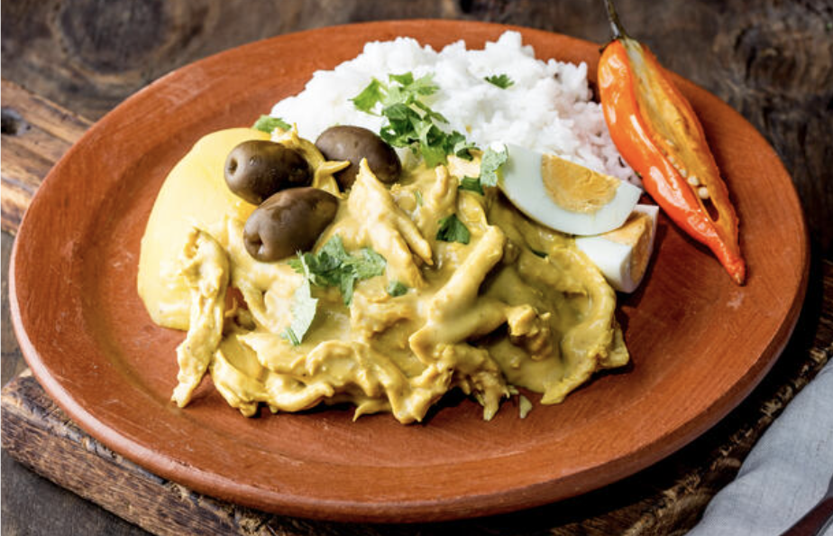

Aji de Gallina

Aji de Gallina is a staple in Peruvian cuisine, a real classic and a must try.
This recipe consists of shredded chicken slathered in a spicy and creamy nut/cheese based sauce. It is typically served alongside rice and boiled potatoes. The famous bribant yellown color comes from a famous Peruvian pepper known as aji amarillo. This dish has a lot of ingredients so make sure you focus on prepping all the ingredients before starting.
Ingredients
- 4 yellow potatoes
- 1.5 bags of salted crackers
- 1 cup of evaporated milk
- 1.5 lbs of chicken breast
- 3 aji amarillo (yellow peppers)
- 1/2 cup vegetable oil
- 1 whole garlic minced
- 1 large onion (chopped)
- 3 tbsp of walnuts
- 2 cups of queso fresco
- 3 cups of the rice of your choice
- hard boiled eggs
Steps
- Gather the ingredients.
- Put the chicken and the peeled potatoes in boiling water, add some salt in the pot. The potatoes will be finished once they are easily pierced with a fork. Once the chicken is cooked take it out and put it in its own container and allow it to cool down.
- Take potatos out of the pot and cut them in quarters. Then set them aside. Save the chicken/potato broth and set it aside.
- Begin shreeding the chicken until you reach the desired size.
- Remove stems and seeds from the aji amarillo and then add it to the blender with vegetable out and blend until smooth.
- Add contents of blender to a medium saucepan, then add minced garlic and onions and sautee the contents.
- Once mixture has cooked and cooled down add mixture to the blender again.
- Add the salted crackers into the blender and add the 1 cup of evaporated milk. Then blend the contents.
- Add the walnuts and queso fresco to the blender. Then add some of the broth that was set aside from step 3 and blend until smooth.
- Add the shredded chicken onto a pan and simmer it for several minutes, once some of the chicken shreds become golden yellow add the sauce mixture from the blender.
- Continue cooking the shredded chicken with sauce and occasionally add some of the broth that was set aside when the sauce becomes too thick.
- Plate the dish with rice and some of the cut potatos, then add the chicken sauce on top of the potatoes and add some cut hard boiled eggs to your plate. Enjoy the delicious dish!!!
Return to Main Page